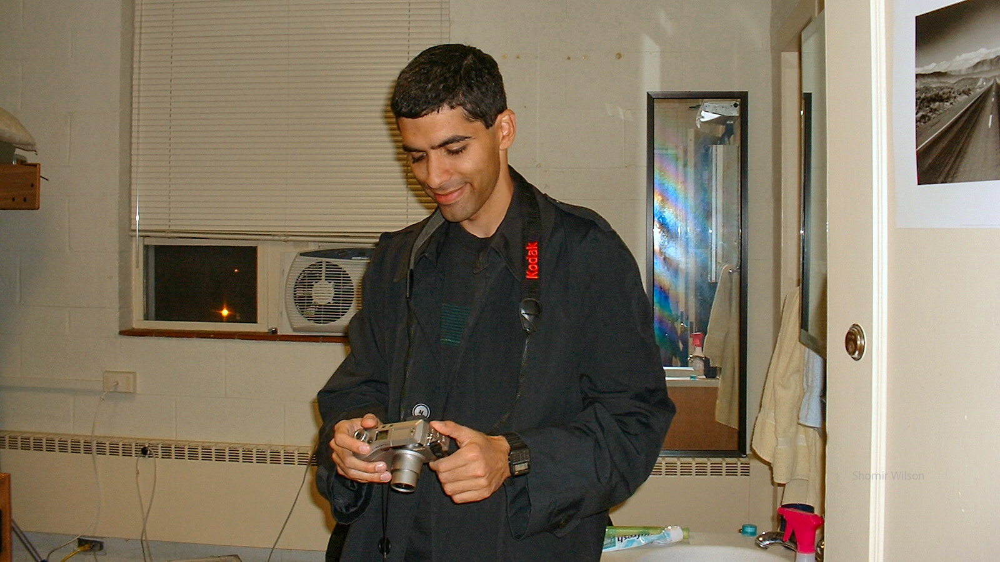
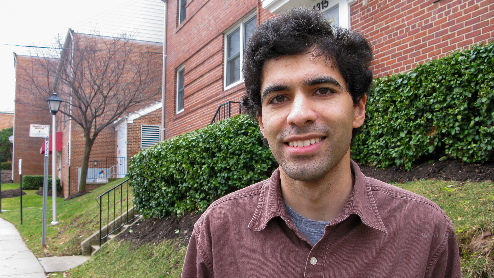
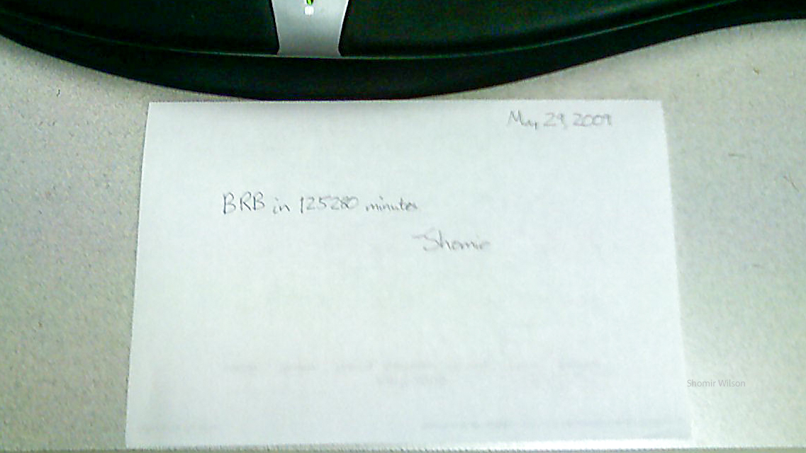
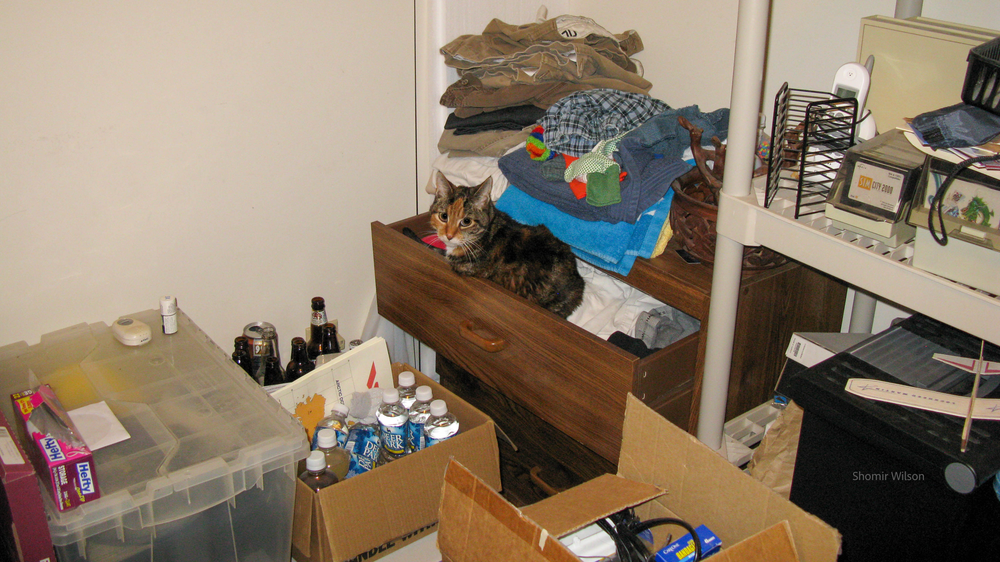
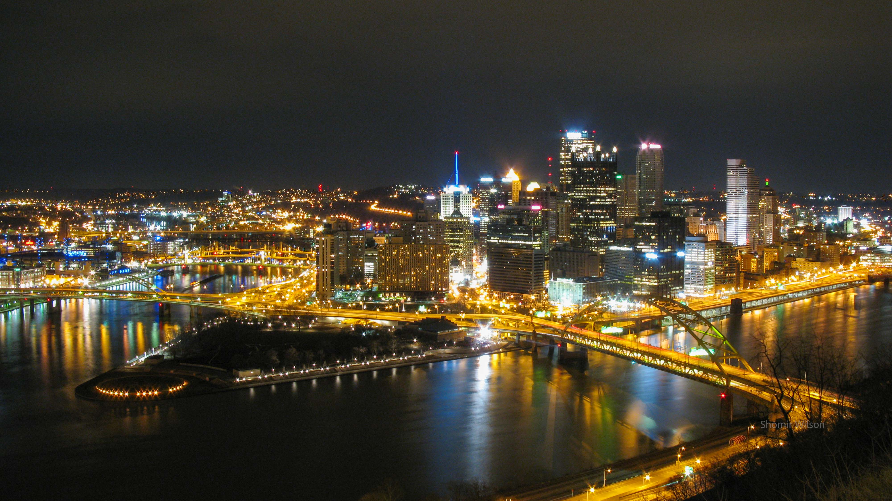

Travel and Meaning, Part 2:
Wanting
This page is part of Travel and Meaning and my advice pages.
![Hand writing on notebook paper: It's about half an hour past midnight now, on the plane. I'm still going by Washington time. This is a huge thing to be flying! They gave us dinner around 10:30. [redacted] and Ma ordered special meals, but I got a regular one. It was better - I got cheesecake and chocolate with it. I believe that we are flying over open water now. When we flew over cities in the dark, they appeared as glowing webs of golden threads. I could distinguish Washington and New York.](images/faqs/tam/wanting/journal_1998.jpg)
June, 1998
Dulles International Airport, Virginia
In the early evening my mom, my sister, and I boarded our flight to London, our first in a sequence to get to Kolkata. The plane was a British Airways Boeing 747-100.
My impressions of passenger planes in movies and books hadn't prepared me to understand what I saw. As we entered the aircraft and turned right, we passed by the stairs going to the top level; I had known to see that from cross-section diagrams of the 747 but I assumed upstairs was more of the same seating as below. We passed through the Business Class cabin, through an economy cabin, and then into a second economy cabin, where we found our seats toward the back. I noticed the seats were more tightly packed than those up front, but the differing colors of upholstery in each cabin stood out to me more. I was a lanky fifteen-year-old who didn't need much space and had never tried to sleep overnight while seated upright. (I didn't know how difficult it would be.) I couldn't see a huge difference in comfort between the cabins.
I was aware that some people flew on a regular basis. As we passed through the business class cabin, I saw passengers who had already settled in and seemed nonchalant, or even bored. Among them was a man in a sport coat reading a newspaper and a boy my age with headphones on, listening to music on a portable player. I imagined the man on a work trip, and I imagined the boy shuttling back and forth across the Atlantic to visit relatives or to attend an elite boarding school. I wondered what it was like for travel on planes to be a routine, unremarkable part of one's life. I was aware that some kids my age had already flown to visit relatives or go on vacations.
I wondered about experiences that seemed unlikely for me to ever have. I assumed I was already far behind and unlikely to catch up.

Spring, 2002
Blacksburg, Virginia
I was out of the running for a scholarship to travel abroad. I had received the phone call in the early afternoon, and I hadn't been able to concentrate on schoolwork—which I had plenty of—since then. I had eaten dinner, though more out of routine than hunger, and then went for a walk. Now it was night and I sat on a bench at the edge of campus, staring into the distance.
The location of the bench was significant: a certain friend had once lived in a house nearby. She had won the same scholarship three years previously, and it launched her toward winning a prestigious fellowship to attend postgraduate school at a well-known university in the United Kingdom. We had met during my first year of college, which was her final year. During that overlap we had become unlikely friends: she was a polished, highly accomplished senior and I was a criminally awkward freshman. I imagined if I contacted her about the rejection she would try to console me with stories about how previous rejected applicants had still become successful, but I didn't want that kind of consolation. It wouldn't get me the scholarship.
I had included in my application a plan to spend a summer in India, in a different region than I had visited to see relatives, to work with a local aid organization building computer labs for schools. Unlike my friends who had studied abroad in organized programs, I would have gone there alone. Prior to receiving the verdict I had simultaneously feared not winning (not being able to go) and winning (having to go). I was eliminated after the first round of interviews, but it hadn't been a total surprise. Compounding my mixed motivation was intense fatigue from taking several difficult classes, and I had interviewed poorly.
I also wondered about the strength of my written application. Had it been too philosophical and brooding? I didn't want to convey excitement about going somewhere; I had assumed that would sound juvenile. Accomplishment seemed better to write about than adventure, and I wanted to appear professional, seasoned, and ready. I wasn’t even certain I was excited about my plan as much as I feared not winning.
It was getting late. In a different universe, I thought, someone might wonder where I was and would be concerned. In this one I couldn't think of anyone who cared. During my second year of college, the people that I wanted to count as my friends didn't seem interested in spending time with me, either because they were busy or because my desire to spend time with them was asymmetric. To date, I had spent most of college feeling like I was the low-priority social option among my peers.
The absurdity of waiting for sympathy that wasn't coming brought me to action. Enough, I thought. I got up and walked back to my dorm. There was homework to complete, and there were more applications to submit.

December 9, 2008
College Park, Maryland
That evening in my apartment I submitted an application, but I doubted the worth of my effort. It was for an NSF-funded fellowship for graduate students to spend eight weeks in Australia. A couple months prior I had received the program announcement from a University of Maryland email list, but after a quick read I had archived it. I didn't win things like that. However, soon afterward I was rejected for an internship and felt concern for my lack of summer plans. Grudgingly I moved the announcement back to my inbox and began the application. I wanted to avoid the regret of not trying.
Four years earlier as an undergraduate I had tried to win a fellowship to spend a summer in India working with a local aid organization, and my application was eliminated after the first round of interviews. A year later I had applied for the Goldwater Scholarship, a nationally-competitive undergraduate award for STEM majors, and I didn't get it. After that I had applied for the National Science Foundation's Graduate Research Fellowship Program, and I didn't get that either. Many of my college friends in Hillcrest Hall, the honors dorm where I had lived, had received multiple nationally-recognized scholarships or fellowships. Now I was three years into graduate school and motivated perhaps by anachronism. I still wanted to win something that felt significant—by an arbitrary measure—and I still wanted to travel overseas. I had visited India twice on family trips, in 1998 and 2004, and I had been to Poland for a conference in 2007. Somehow those didn't count: as someone with Indian ancestry I felt obligated to visit India, and the Poland trip had been brief and underwhelming. I realized I had moved the goalposts further away, but I didn't care.
In some ways I made the application for this new experience as difficult as possible. The program sent US graduate students to one of several countries in East Asia and the Pacific, and I chose to apply for Australia, the option with the lowest acceptance rate. Already having a collaborator in Australia would have strengthened my application, but I knew no one, so I searched the web for faculty there in my research area and cold-contacted them until one agreed to be named as my potential host. The project was a pivot from my graduate research to date to a topic I was more interested in. I hoped it would be productive; thus far, I had ridden along on projects led by other graduate students or by postdocs, uncertain when or how to start one on my own. Either way, the application had forced me to plan my first independent project.
I navigated through Fastlane, NSF's grant proposal submission system, to submit the application. It seemed designed for much larger requests than mine—from professors seeking millions of dollars, not graduate students seeking a few thousand—and I puzzled over obscure terminology and options. I wondered if they would ever become relevant to my work.

February 14, 2009
Pittsburgh, Pennsylvania
I was visiting my girlfriend, a graduate student at Carnegie Mellon University living in Pittsburgh, when I learned I had received the fellowship to go to Australia. I had checked my email compulsively over the preceding two weeks, knowing the result would come soon. That afternoon, I pulled out my PDA—personal digital assistant, a precursor to a smartphone—and saw the message I was waiting for.
I began laughing and crying at the same time. Initially my girlfriend was out of the room, but when she returned, she said it was "the most she had seen me laugh in a long time". It was my fourth year of graduate school.

June 1, 2011
Fredericksburg, Virginia
Graduate school was six years for me, and afterward I moved back into my parents' house. I held no job offers. I marched at commencement feeling empty and uncertain whether I had accomplished anything of value. Weeks earlier, a professor had been loudly dissatisfied with my work, to the extent that they yelled their displeasure; other faculty stood up for me, and in retrospect I had nothing to apologize for, but at the time it felt like I had traded my dignity for a degree. My apartment lease ended on the last day of May, but I didn't have the energy or motivation to plan a proper move-out. I finished packing just after midnight, and exhausted, I made a last-minute decision to spend the night at a nearby hotel rather than drive home.
Late in the morning on that first day of June I drove to my parents' house, still wearing yesterday's clothes. Because of my haphazard packing, all my clean clothes, and even my toothbrush and toothpaste, were inaccessible in my car. At home I found that my parents were using my old room for storage, and it took a couple hours for us to move around enough of their items that I could nominally move in. Even then I only had space to open suitcases and boxes, not to unpack them. The arrangement felt both temporary and indefinite.
In one box I found candle wax on several household items and traced it to an empty glass. I realized it had contained a candle that I received as a favor from a friend's wedding a few years prior. The summer afternoon heat in my car had melted the wax, and at some point the glass had tipped over. I sat holding the glass in my hand and thought about it for a long time. I had no particular use for the candle, but I was sad it didn't survive the move.
Later in the evening, I checked my email and received a rejection for an international postdoc fellowship I had applied for. I had proposed to spend a year at the University of Edinburgh, a mecca for my area of research. It wasn't a complete surprise; a few weeks ago I had asked the granting organization for an update, and they disclosed it was unlikely I would win. Still, it had been the post-graduation possibility I was most enthusiastic about. I had spent the southern-hemisphere winter in Australia in 2009 and summer 2010 in Singapore, and I wanted more time in other countries. I thought about people I had known in college who had studied abroad once, and how that time in their life seemed firmly in their past. I didn't want to be past those adventures yet, remembering how they had supported me through difficult times.
Meanwhile, my best job prospect involved a postdoc position I had discussed with a collaborator in the Washington, DC area a couple months prior to graduating. They were exuberant about me joining their lab, although I was secretly unexcited about the topic I would work on. The collaborator had all but promised me an offer, and in a month I would know for certain.
I knew I would resubmit the international postdoc application in a few months, but I wondered against what backdrop that would happen. In the meantime, the lack of a firm offer for the all-but-certain position gave me the slightest pause.

June 29, 2011
Pittsburgh, Pennsylvania
The collaborator couldn't extend me an offer. They said in an email it was a budgetary issue, but I wondered if they had heard about the turbulence I encountered during the final stage of my PhD. I was visiting my girlfriend again, and I read the email in the morning while she slept in. I let her continue sleeping, and I waited until after she had finished her breakfast to tell her.
I was an unemployed recent PhD graduate with an underwhelming publication record and no substantial prospects for employment. I had wanted to become a professor, but the path forward seemed steeper than it had ever been before.
I thought about the application I would resubmit for the fellowship year at the University of Edinburgh. The next submission deadline was a few months away, and it would take several more months to receive a reply. Winning the fellowship would be brilliant, but unlikely, and I needed something much sooner. In the meantime I would apply for positions in industry, knowing that direction might be necessary, and postdoc positions in academia, to try to find a way back in.
Continue to Part 4 or go to the Table of Contents.